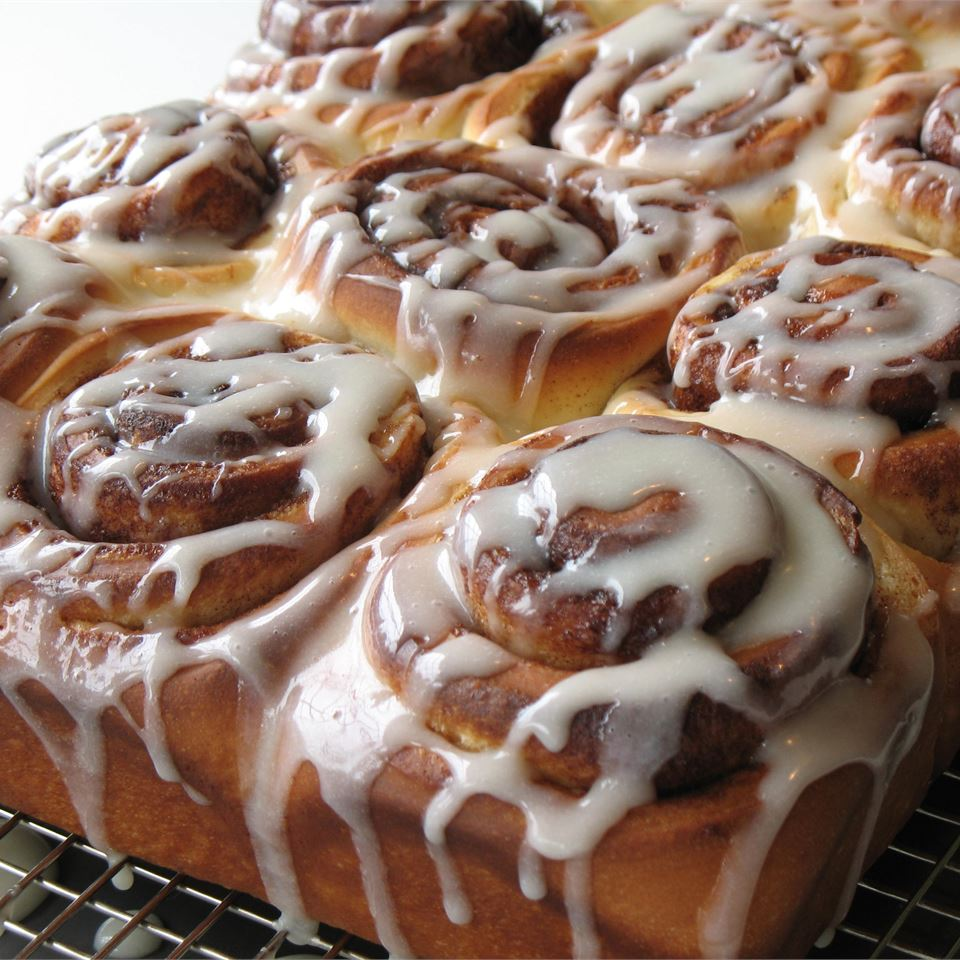

Cinnamon Roll

Description
A deliscious pastry filled and rolled with a cinnamon sugar glaze.
Once the pastry is baked to perfection its cover in cream cheese icing.
Ingredients
Dough:
- 1 cup warm milk (110 degrees F/45 degrees C)
- 2 eggs, room temperature
- ⅓ cup margarine, melted
- 4 ½ cups bread flour
- 1 teaspoon salt
- ½ cup white sugar
- 2 ½ teaspoons bread machine yeast
Filling:
- 1 cup brown sugar, packed
- 2 ½ tablespoons ground cinnamon
- ⅓ cup butter, softened
Icing:
- 1 (3 ounce) package cream cheese, softened
- 1 (3 ounce) package cream cheese, softened
- ¼ cup butter, softened
- 1 ½ cups confectioners' sugar
- ½ teaspoon vanilla extract
- ⅛ teaspoon salt
Steps
Step 1
Place ingredients in the pan of the bread machine in the order recommended by the manufacturer. Select dough cycle; press Start.Step 2
After the dough has doubled in size turn it out onto a lightly floured surface, cover and let rest for 10 minutes. In a small bowl, combine brown sugar and cinnamon.Step 3
Roll dough into a 16x21-inch rectangle. Spread dough with 1/3 cup butter and sprinkle evenly with sugar/cinnamon mixture. Roll up dough and cut into 12 rolls. Place rolls in a lightly greased 9x13 inch baking pan. Cover and let rise until nearly doubled, about 30 minutes. Meanwhile, preheat oven to 400 degrees F (200 degrees C).Step 4
Bake rolls in preheated oven until golden brown, about 15 minutes. While rolls are baking, beat together cream cheese, 1/4 cup butter, confectioners' sugar, vanilla extract and salt. Spread frosting on warm rolls before serving.